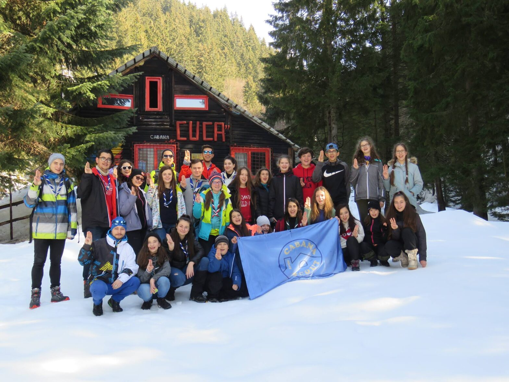

Școala de iarnă Cuca 2019

Încă de la început, Școala de Iarnă mi s-a părut o provocare. Și aici nu mă refer la cei 18 temerari vs 11 exploratori, ci la zăpada mult prea mare pentru un om de 1,50m înălțime.
Am ajuns deci, mai mult sau mai puțin întregi, la Cabana Cuca, după un drum în care eu și Alina ne-am exersat calitățile de îndrumat temerari. Ce poate merge prost cu Alina în față și Scrio în spate? Sigur nu temerarii!
La cabană, fetele sus și băieții jos (în paturi) că de, lasă-le pe ele să moară de cald. La ce nu s-au gândit băieții a fost că am complotat împotriva lor, iar în mijlocul nopții am deschis geamul. Și cine zici că a dormit bine și cine a dârdâit de frig? Probabil ai ghicit… 🙂
Duminica ne-am început-o cu recunoștință, cu un “mulțumim Ovidiu pentru noduri”. Apoi, un hike până la stâna din apropiere în… zisesem ceva de zăpadă mare?… zăpadă peste genunchi, până la brâu uneori, câteodată afundată în ea până mai sus. Cum noi iubim drumețiile de noapte, nu am ratat nici această ocazie!! (am stat ceva să mă gândesc și nu am fost în nicio drumeție din care să ne fi întors pe lumină). Seara o să îmi rămână în inimă toată viața. Nu cred că m-am simțit vreodată mai fericită auzind ceva despre mine, decât în timpul momentului spiritual. A fost fix momentul în care am realizat de ce sunt la cercetași și de ce fac ceea ce fac cu pasiune.
Revenind…
Mihai: “jamboree”, temerarii: “jamboree”. Și o bătălie în zăpadă cu 2 tabere: exploratori vs temerari. Acum temerarii, știind să lege bine, au fost abili și au reușit să mă captureze, să mă lege și cât pe ce să mă salte, dacă nu eram salvată imediat de exploratori. Costică (cuțu mic al cabanei) credea că ne batem de-a binelea și tot încerca să ne despartă cu un lătrat, un agățat, ceva mușcături pe ici colo.
Sunt mândră că am reușit să sparg lemne (sau așchii) cu toporul! Am avut și TedEx. Nu cred că am conștientizat pe moment, dar discursurile m-au inspirat tare mult. De când m-am întors din camp nu ratez nicio ocazie să merg pe jos. Și sper să mă țină obiceiul.
Marți, după prânz, am început să urcăm spre Vf. Păpușa și am urcat și am urcat, până am dat peste lumină. Și lumina înseamnă ieșirea din pădure, adică Șaua Grădișteanu. Chiar și obosite, când eu și Alina am auzit că se fac poze, am urcat mai repede decât Costică (cuțu mic) atunci când ne fugărea. După, am alunecat înspre cabană fiecare după posibilități: eu în picioare, Alina pe fund, Seba cu sărituri și Filip chiar…repede! Si ce să vezi? Am fost înapoi la cabană PE LUMINĂ, prima dată de când sunt la cercetași (nu luăm în calcul Cupa Izvoarelor!). La Balul Monștrilor de seara, s-a “stat la coadă” și am încercat să mă feresc de curajoasele crengi ale lui Groot.
Așa cum se cuvine, miercuri, după 4 zile de leneveală, eu și Alina am zis să ne apucăm de treabă. Curățenie. Cabana Cuca a fost lăsată mai bine decât am găsit-o. Iar, după niște mici mâncați pe fugă în Câmpulung, ne-am trezit ajunși în București.
Aș vrea înapoi. Măcar acolo nu aveam semnal, cele mai faine 5 zile!
Scrio, explorator